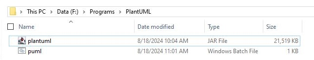
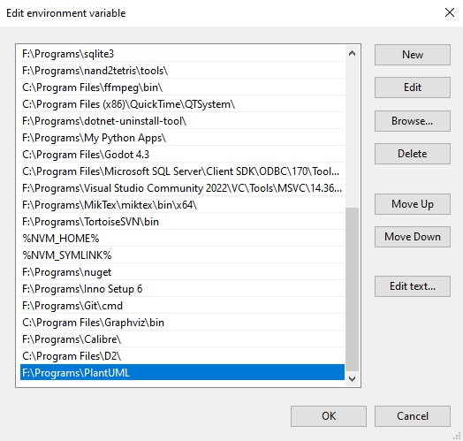

Setup
- Download the jar file from following url PlantUTML download page
- Rename the jar file to plantuml
- Create a new folder and copy the jar file to that folder
- Add this folder to Environment Variable
-
Create a new batch file puml.bat in the same directory. Add following code inside the file.
puml.bat
java -jar F:\Programs\PlantUML\plantuml.jar %1 %2 %3 %4 %5 %6 %7 - Make sure the folder is Environment Path
- 
-
To check the installation run following command,
puml -version
This should produce output like ThisF:\My Data\Work\Learning\PlantUML>java -jar F:\Programs\PlantUML\plantuml.jar -version PlantUML version 1.2024.6 (Sat Jul 06 14:44:38 IST 2024) (GPL source distribution) Java Runtime: OpenJDK Runtime Environment JVM: OpenJDK 64-Bit Server VM Default Encoding: UTF-8 Language: en Country: US PLANTUML_LIMIT_SIZE: 4096 Dot version: dot - graphviz version 2.44.1 (20200629.0846) Installation seems OK. File generation OK
Simple State diagram
- Create a new text file state.puml
-
Add following content in the File
@startuml [*] --> State1 State1 --> [*] State1 : this is a string State1 : this is another string State1 -> State2 State2 --> [*] @enduml -
To generate png,
puml state.puml
-
To generate png in specific folder,
puml -o output_folder state.puml
-
To generate svg,
puml state.puml -tsvg
To Generate svg in specific folderpuml -o output_folder state.puml -tsvg